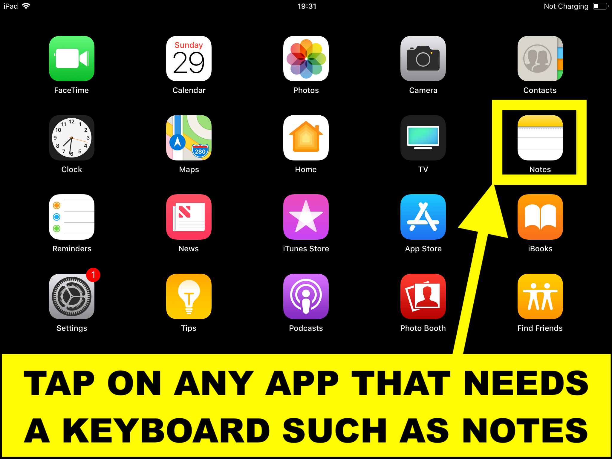
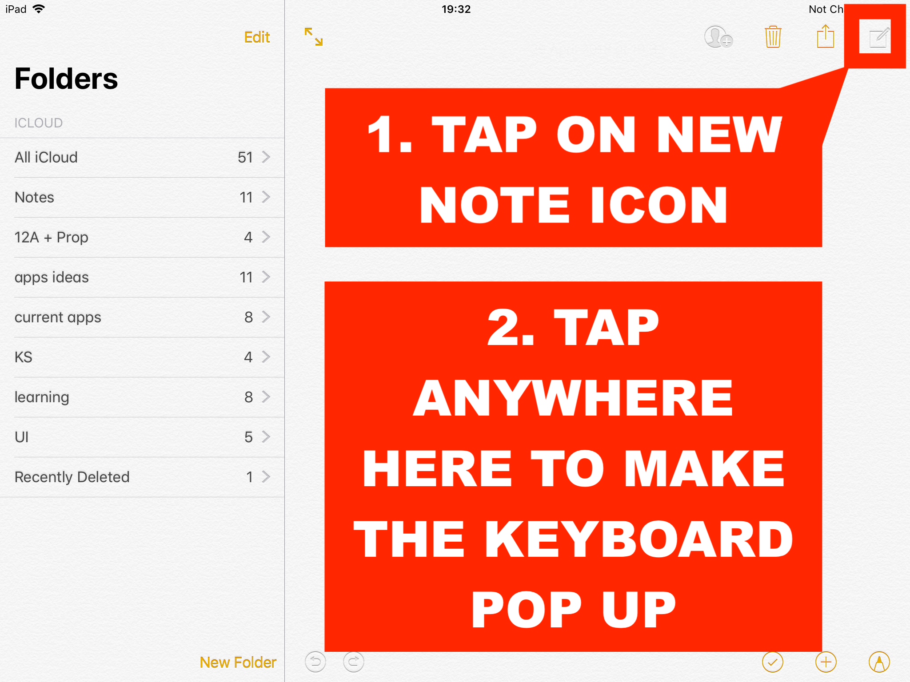
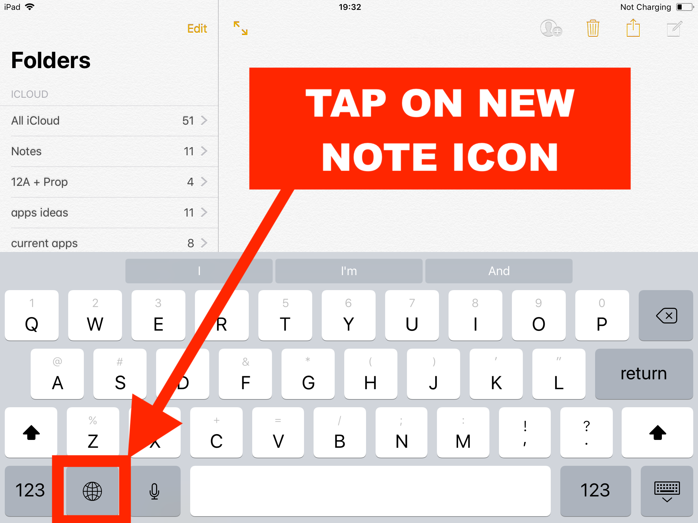
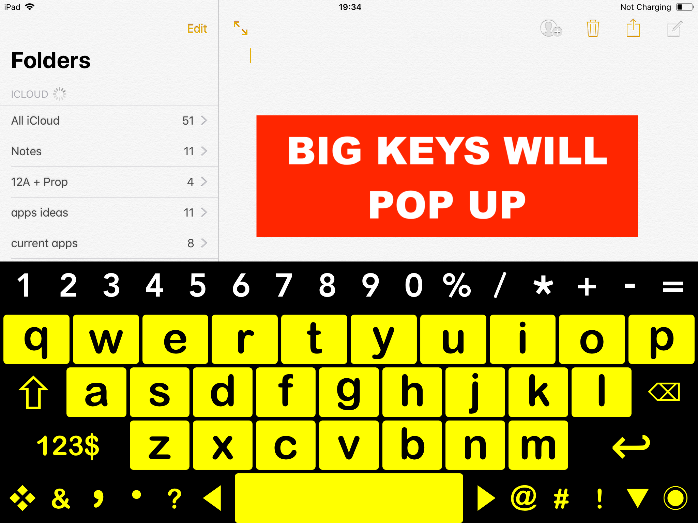

Step-by-Step Guide
Step 1: Open an App That Requires a Keyboard
Open an app like Notes where you can use a keyboard.

Step 2: Create a New Note
Tap the New Note icon in the top-right corner, then tap inside the note to bring up the default keyboard.

Step 3: Check for the Globe Icon
If the globe icon is missing, Big Keys is not installed. Follow the installation instructions.

Step 4: Choose Big Keys
Tap the globe icon and select Big Keys from the list of keyboards.

Step 5: Big Keys is Ready
The Big Keys keyboard will now appear and is ready to use.